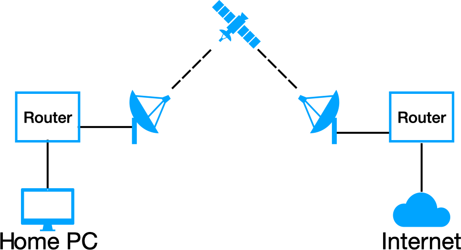
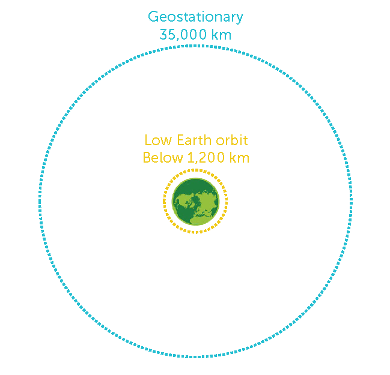
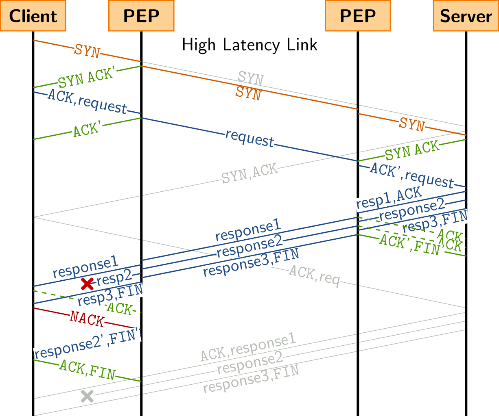
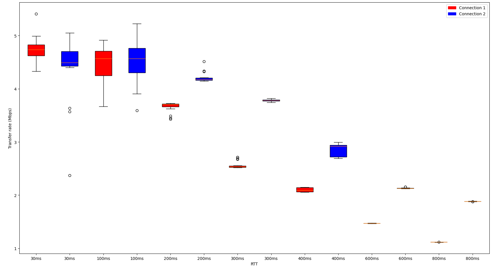

QUIC over high Bandwidth-Delay Product links
Q Misell
Tuesday 7th of May 2024
What is QUIC?
Why QUIC?
- Replacement for TCP
- Transferred over UDP, moving control from the Kernel to the application
- Connection path migration and feature negotiation
- 0-RTT connection initiation
- TLS baked in
Satellite broadband


GEO: 35.000km high, ~800ms RTT
LEO: <1.200km high, ~60ms RTT
What is Bandwidth-Delay Product (BDP)?
Given a 150Mbps satellite link with 800ms of Round-Trip delay ~15MiB are in flight at any one time.
TCP PEPs

© Sedrubal, CC BY-SA 4.0, via Wikimedia Commons
Research goals
- Find an alternative solution to improve performance when using QUIC over satellite connections
- Backwards compatible with existing QUIC implementations
- Deployable at internet scale without the need for a flag day
- Suitable for submission to the IETF as an RFC
Careful resume
Convergence of Congestion Control from Retained State
draft-ietf-tsvwg-careful-resumeBDP Tokens
draft-misell-quic-bdp-tokenBDP Token {
Private Data Length (i),
Private Data (..),
Capacity (i),
RTT (i),
Requested Capacity (i),
}
Some time passes


Let's put it all together!
Without BDP Tokens and Careful Resume

With BDP Tokens and Careful Resume

Effect on data transfer rates

Questions?
Slide deck available at
magicalcodewit.ch/thesis-slides/